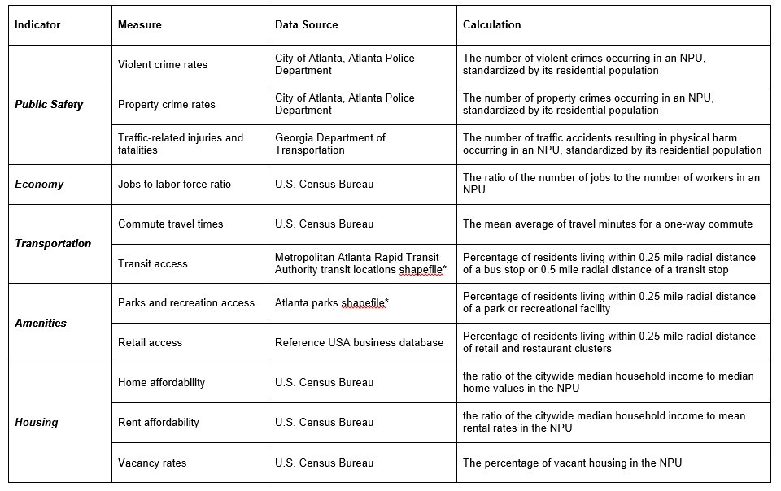
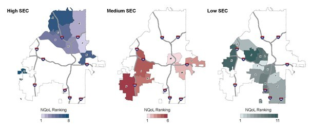
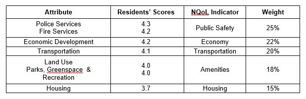

Data & Measures:
Data that is specific to the Atlanta region is marked with an asterisk (*).
Ranking Calculations
Each of the NQoL measures are aggregated into indicators by using standard scores. The values are then ranked from 1 (high) to 25 (low).
To create the index, the NQoL indicators were weightwith results from a citizen survey conducted by the City of Atlanta for their 2011 Comprehensive Development Plan update. The constructed weights were derived specifically from one question of the survey that asked participants to prioritize a number of planning attributes on a scale of one to five. Seven relevant topics were chosen and matched with each of the five NQoL indicators. The participants’ scores were then converted and consolidated under each indicator to produce the weights seen in the table below.
Survey Scores and Indicator Weights
Source: City of Atlanta, Comprehensive Development Plan Update; Authors